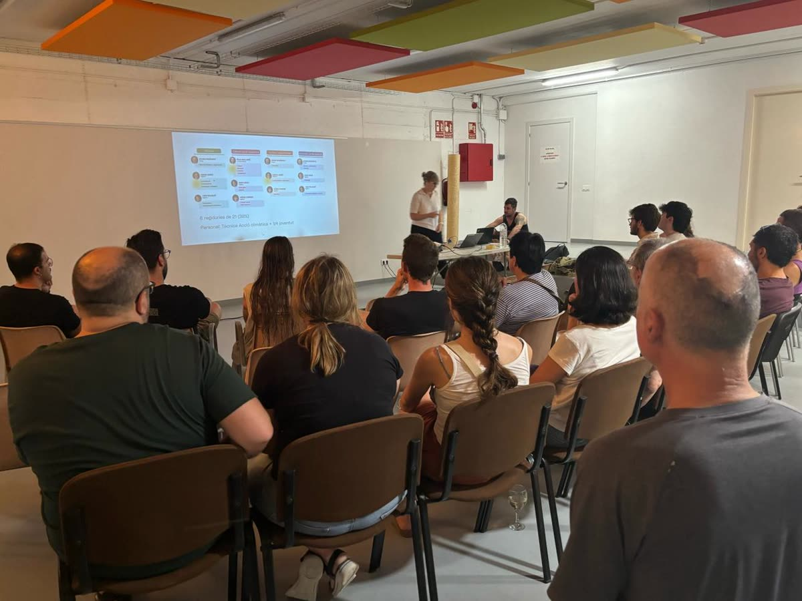
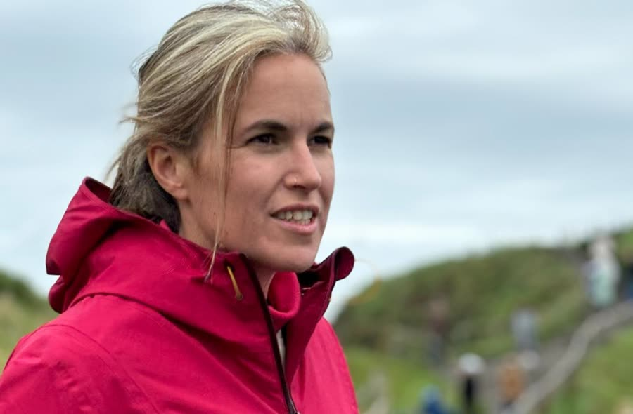

Qui som
Una iniciativa municipalista per al 2027
Subirats, endavant! és una iniciativa municipalista que es presenta a les eleccions de maig de 2027 per guanyar-les i liderar el govern del municipi. La impulsen l’Alternativa per Subirats-CUP, que hi trasllada quinze anys de feina municipal, i persones independents dels diferents nuclis que s’hi han sumat. L’encapçala Maria Carbó, primera tinenta d’alcaldia, amb la voluntat d’agrupar la majoria progressista, d’esquerres i independentista del municipi.
D’on ve
El 19 de juny de 2026, l’assemblea general de l’Alternativa per Subirats-CUP va aprovar per consens un canvi de cicle. Dues decisions: proclamar Maria Carbó candidata a l’alcaldia i obrir el projecte a persones independents dels quinze nuclis. Amb aquell acord, l’Alternativa trasllada el relleu a un espai nou després de quinze anys de feina municipal, i no es tornarà a presentar amb la seva sigla.

- 6 març 2011 L’Alternativa per Subirats es presenta en públic per primera vegada, a l’Ateneu ordalenc.
- 2011-2023 Dotze anys a l’oposició. Sempre entre el 18% i el 23% dels vots i dos regidors, tret del 2015, quan en va obtenir tres i va fer el millor resultat.
- Juny 2023 L’Alternativa per Subirats entra per primera vegada al govern de Subirats, amb un pacte amb ERC.
- 19 juny 2026 L’assemblea de l’Alternativa per Subirats aprova el canvi de cicle impulsant una nova candidatura oberta i transversal i proclama Maria Carbó candidata.
- Agost 2026 Comença a treballar l’equip de cinc persones que encapçalarà la llista.
- Tardor 2026 Trobades amb centenars de veïns i veïnes i redacció dels cinc eixos programàtics.
- 12 desembre 2026 Presentació pública de la candidatura, a Sant Pau d’Ordal.
- Maig 2027 Eleccions municipals.
Candidata a l’alcaldia
Maria Carbó (Lavern, 1986) és primera tinenta d’alcaldia i regidora de Comunicació, Participació Ciutadana, Acció Climàtica i Agricultura, i Transparència. És llicenciada en Publicitat i Relacions Públiques per la UAB i fa més de quinze anys que treballa en comunicació: ha dirigit equips en mitjans d’àmbit nacional i una empresa del sector, i ara és al departament de màrqueting de 3Cat. Si guanya, serà la primera dona a l’alcaldia de Subirats.
Amb ella hi ha quatre persones més, d’Ordal, Sant Pau i Lavern, que treballen plegades des de l’agost. La resta de la llista s’està acabant de tancar amb gent dels quinze nuclis.

Per què ara
L’Alternativa per Subirats fa quinze anys que treballa pel municipi: dotze a l’oposició i, des del juny de 2023, al govern, amb un pacte amb ERC. Aquesta experiència és la que volem portar a l’alcaldia: saber com funciona l’Ajuntament, què es pot fer i què no i com es gestiona. Prop de la meitat dels votants de Subirats dona suport a forces d’esquerres i independentistes, i aquesta majoria necessita una candidatura que la sumi i la lideri. Volem fer bé el dia a dia, no deixar cap dels quinze nuclis enrere i fer de Subirats el millor municipi del Penedès.
Presentació
Dissabte 12 de desembre, a les 12 h
Plaça Subirats, Sant Pau d’Ordal. Presentem la marca, l’equip de cinc persones que encapçala la llista i els cinc eixos del programa. Acte obert a tothom.
Vols sumar-t’hi? Posa’t en contacte amb nosaltres.